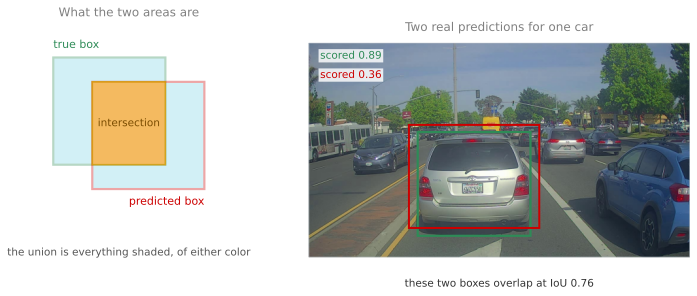
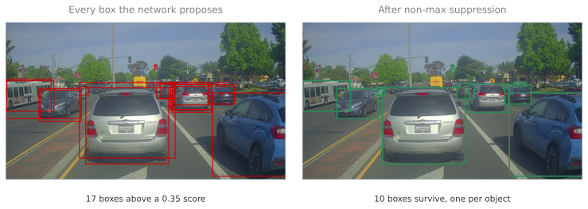
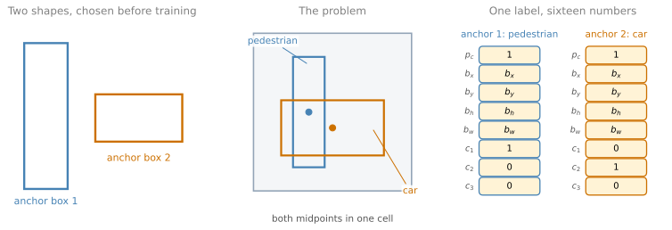
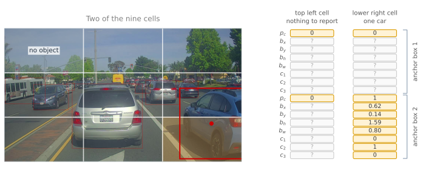
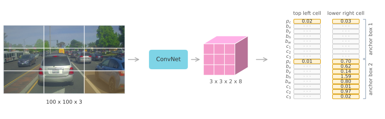

IoU, Non-max Suppression, and Anchor Boxes
deep-learning
convolutional-neural-networks
computer-vision
object-detection
yolo
non-max-suppression
anchor-boxes
How overlap is measured, how duplicate detections of the same object are removed, how one grid cell reports two objects, and how the whole YOLO algorithm fits together.
Bounding Box Predictions with YOLO built the grid, the target volume, and the box encoding. Run that network on a real photograph and three practical problems appear immediately.
There is no way yet to say whether a predicted box is any good, since it will never match the true box exactly. The same object gets reported many times over, because several cells near it are confident. And a cell that holds two midpoints still has to choose between them.
This page takes those three in turn, and then assembles the whole algorithm.
Measuring Overlap with IoU
Suppose the true box for a car is known, and the algorithm outputs a box that is close but not identical. Is that a correct detection or not? Something has to turn “close” into a number.
Intersection over union, written IoU, is that number. Take the two boxes, measure the area where they overlap, measure the area covered by either of them, and divide.
\[ \text{IoU} = \frac{\text{area of intersection}}{\text{area of union}} \]
The intersection is the region inside both boxes. The union is the region inside at least one of them, which is the two areas added together minus the intersection, since the overlap would otherwise be counted twice.
If the two boxes coincide perfectly the intersection equals the union and IoU is 1. If they do not touch at all the intersection is zero and so is IoU. Everything useful happens in between.
By convention, a detection counts as correct when IoU is at least 0.5. That number is a human choice rather than a result. There is no theory behind 0.5, it is simply a threshold that people agreed produces sensible judgements. Being stricter is perfectly reasonable, and 0.6 or 0.7 are both used when a task needs tighter boxes. Going below 0.5 is rare, because at that point two boxes can be called a match while overlapping less than half.
IoU has a second use, which arrives in the next section. Stated generally, it measures how similar two boxes are, and nothing about the definition requires one of them to be a ground truth label. Two predictions can be compared the same way, and that is exactly what removes duplicates.
Review Questions
1. Why divide by the union rather than by the area of one of the boxes?
TipAnswer
Because dividing by one box can be fooled. If the predicted box were tiny and sat entirely inside the true box, then the intersection would equal the whole predicted box, and dividing by the predicted area would give a perfect score for a box that misses almost all of the object. The union counts every region either box claims, so a prediction is penalized both for missing part of the object and for covering things that are not the object.
1. What IoU do two identical boxes have, and two boxes that do not touch?
TipAnswer
Identical boxes give 1, because the intersection and the union are the same region. Boxes that do not touch give 0, because the intersection is empty while the union is not. Every other case falls between, and the measured 0.76 in the figure above is two boxes drawn around the same car with slightly different sizes and positions.
1. Is a detection with IoU 0.55 correct?
TipAnswer
Under the usual convention, yes, since the threshold is 0.5. It is worth being clear that this is a convention rather than a fact. The same detection would be counted wrong under a stricter threshold of 0.6 or 0.7, which some evaluations use, so a reported accuracy means nothing until the threshold behind it is stated.
1. What is the IoU between the red box and the blue box below? Every square has the same measurements.
TipAnswer
\(\frac{3}{7}\).
Each box is 5 squares wide and 4 tall, so each covers 20 squares. They are offset by one square in each direction, so they overlap over 4 columns and 3 rows, which is 12 squares. The union is \(20 + 20 - 12 = 28\), and the ratio is \(\frac{12}{28} = \frac{3}{7}\).
The trap is dividing by the area of one box, which would give \(\frac{12}{20}\), or forgetting to subtract the intersection from the union, which would give \(\frac{12}{40}\).
Non-max Suppression
Run the detector on a real photograph and it does not report one box per object. It reports several, because detection is happening at every position of a fine grid.
The reason is worth stating carefully. On a 19 by 19 grid there are \(19 \times 19 = 361\) cells, each running classification with localization, so the raw output for one class is a \(19 \times 19 \times 8\) volume of candidate answers. Only one of them holds the midpoint of a given car, so in principle only one should fire. In practice the cells around it see most of the same car and are also fairly confident, so a single car produces a cluster of overlapping boxes with different scores.
Non-max suppression cleans that up. The name says what it does, which is to keep the maximum and suppress the rest.
The procedure is short.
- Discard every box whose score is below a threshold, commonly 0.6. Most of the 361 cells are reporting nothing at all, and this removes them in one step.
- While any boxes remain, take the one with the highest score and output it as a real detection.
- Discard every remaining box whose IoU with that output box is 0.5 or more, since a box overlapping it that much is describing the same object.
- Repeat from step 2 with what is left.
The figure below runs exactly that on the photograph, using the detector that ships with the course lab.

Seventeen boxes go in and ten come out. Following one cluster shows why.
The car on the right of the frame attracts four boxes, scoring 0.80, 0.63, 0.54, and 0.43. Non-max suppression takes the 0.80 box first, because it is the highest, and outputs it. It then measures the others against it and finds IoU values of 0.82, 0.80, and 0.64, all comfortably above the 0.5 threshold, so all three are discarded as descriptions of a car that has already been reported. The bus at the left edge loses a duplicate the same way, at IoU 0.72, and the large car in the middle loses one at IoU 0.76.
Two details matter for using this correctly.
The score being compared is \(p_c\), the probability that there is an object. In a full implementation it is usually \(p_c\) multiplied by the class probability, so that a confident car detection outranks an uncertain one of the same class.
With more than one class, non-max suppression is run independently for each class. Detecting pedestrians, cars, and motorcycles means running the procedure three times, once over the boxes labeled pedestrian, once over cars, and once over motorcycles. Doing it jointly would let a confident car suppress a pedestrian standing next to it, which is a different object and should be reported.
Review Questions
1. Why does one object produce several boxes in the first place?
TipAnswer
Because every cell of the grid runs the detector, and cells neighboring the one that owns the object can see most of that object too. On a 19 by 19 grid there are 361 chances to be confident about the same car, and although only the cell containing the midpoint is supposed to claim it, nearby cells produce plausible boxes with somewhat lower scores. In the photograph above, one car drew four boxes scoring between 0.43 and 0.80.
1. Why is a box discarded on the basis of its IoU with an already output box, rather than on its own score?
TipAnswer
Because a low score does not mean a box is wrong, it means the network is less sure. The question that matters is whether the box describes something already reported. High overlap with an output box says it does, so it is a duplicate rather than a new object. A box with a similar score but little overlap survives, because it is describing something else, which is exactly how several nearby cars all get reported.
1. Why run the procedure separately for each class?
TipAnswer
Because overlap between boxes of different classes is not evidence of duplication. A pedestrian standing beside a car produces boxes that overlap heavily, and suppressing one because of the other would delete a real detection. Running the procedure once per class means only boxes claiming the same kind of object can suppress each other, so the pedestrian and the car both survive.
Anchor Boxes
One problem from the previous page is still open. Each grid cell reports one object, so when two midpoints land in the same cell, one of them is lost.
That sounds like a rare accident, and with a 19 by 19 grid it mostly is. It does happen, though, and the classic case is a pedestrian standing in front of a car. Both objects are roughly in the same place, so both midpoints fall in the same cell, and a cell with one eight number vector has to choose.
Anchor boxes solve it by giving the cell more than one slot, and by giving each slot a characteristic shape decided in advance. A natural pair is one tall thin rectangle, roughly the proportions of a standing person, and one short wide rectangle, roughly the proportions of a car.

The labeling rule changes in one specific way. Before anchor boxes, an object was assigned to the grid cell containing its midpoint. Now it is assigned to a pair, a grid cell and an anchor box. The cell is still the one containing the midpoint, and the anchor is whichever of the predefined shapes has the highest IoU with the object’s own shape. This is the second use of IoU promised earlier, and here it compares an object against a shape rather than against a ground truth.
The target for one cell becomes two eight number blocks stacked, which is the \(3 \times 3 \times 16\) volume from the previous page. A pedestrian and a car in the same cell now both fit, the pedestrian described in the first block and the car in the second.
When a cell holds only a car, the arrangement is the same and the first block is simply switched off. Its \(p_c\) is 0 and its remaining seven entries are do not care values, while the second block carries the car.
Two situations this does not handle deserve to be said out loud, since it is easy to assume the problem is fully solved.
Three objects in a cell with two anchors. There is no good answer, and the algorithm falls back on some default tiebreak. It is uncommon enough to live with.
Two objects in a cell with the same anchor shape. Two cars side by side whose midpoints share a cell both want the wide anchor, and again one has to be dropped by a tiebreak.
With a 19 by 19 grid both are rare, which is what makes the compromise acceptable in practice.
There is a second, and arguably better, reason to use anchor boxes than the collision it fixes. It lets the network specialize. Some output units become responsible for tall thin objects and others for short wide ones, so each set of weights learns the appearance of a narrower family of shapes rather than trying to cover everything at once. That specialization helps even in images where no two midpoints ever collide.
Choosing the shapes is the remaining question. By hand is common, picking five or ten shapes that span the range of objects expected, some tall and thin, some short and wide. A better method, used in later YOLO work by Redmon and Farhadi (2017), is to run k-means clustering over the shapes of the objects in the training set and take the cluster centers as anchors, which produces a set that matches the data rather than the intuition of whoever picked them.
Review Questions
1. What exactly changes about the labeling rule when anchor boxes are introduced?
TipAnswer
An object is assigned to a pair rather than to a cell. Before, it went to the grid cell containing its midpoint. Now it goes to that same cell and, within it, to the anchor box whose shape has the highest IoU with the object’s shape. The output grows accordingly, from one eight number vector per cell to one per anchor, which for two anchors is the sixteen numbers of a \(3 \times 3 \times 16\) target.
1. A cell contains only a car. What does its first anchor slot contain?
TipAnswer
\(p_c = 0\) and seven do not care entries. Anchors are slots, not objects, so an unused slot has to be labeled as empty rather than left undefined, otherwise the network is never taught to report nothing there. The car occupies whichever slot its shape matches, which for a wide object is the wide anchor.
1. Anchor boxes are introduced to fix collisions, which are rare on a 19 by 19 grid. What is the better argument for them?
TipAnswer
Specialization. With anchors of different shapes, some output units become responsible for tall thin objects and others for short wide ones, so each learns a narrower and more consistent family of appearances instead of covering every shape at once. That benefit applies to every image, including the vast majority where no two midpoints ever land in the same cell.
1. Which of these describe how an object is assigned to an output slot once anchor boxes are in use? Choose all that apply. (a) Anchor boxes stop the predicted box from drifting. (b) The object goes to any anchor box that contains its midpoint. (c) The object goes to the anchor box with the highest IoU inside the cell it was assigned to. (d) The object goes to the grid cell that contains its midpoint.
TipAnswer
- and (d).
The assignment happens in two steps, and the order matters. First the midpoint picks the cell, exactly as it did before anchor boxes existed. Then, within that cell, the object is compared against each anchor shape and takes the slot whose anchor has the highest IoU with its actual box.
- is wrong because an anchor box is a shape, not a region of the image, so it does not contain anything. (a) is wrong because anchor boxes say nothing about drift. They let one cell report more than one object, and they let each slot specialize in a shape.
Putting the Algorithm Together
Everything needed is now on the table, so here is the whole method in order.
Construct the training targets. Suppose three classes, pedestrian, car, and motorcycle, and two anchor boxes. The target for an image is \(3 \times 3 \times 2 \times 8\), usually written \(3 \times 3 \times 16\). Go through the nine cells. For a cell with nothing in it, set \(p_c = 0\) in both anchor slots and leave the rest as do not care values. For a cell holding an object, put that object in the anchor whose shape matches it best, filling in \(p_c = 1\), the four box numbers measured against the cell, and a one in the class component that applies. A real implementation uses a finer grid and often more anchors, so the target is more like \(19 \times 19 \times 16\), or \(19 \times 19 \times 40\) with five anchors, since \(5 \times 8 = 40\).
The figure below writes out two of those nine label vectors for the photograph used throughout this page.

The top left cell is sky and treetops, so both of its anchor slots carry \(p_c = 0\) and nothing else that matters. The lower right cell holds one car, and the car goes to anchor 2, so the first slot is switched off and the second carries \(p_c = 1\), the four numbers measured against that cell, and \(c_2 = 1\) for the car class. Those four numbers are the ones measured on the previous page, where the midpoint sits 0.62 across and 0.14 down its own cell and the box is 1.59 cells tall and 0.80 cells wide. The other seven cells are filled in the same way, and stacking all nine gives the \(3 \times 3 \times 16\) target.
Train. Feed images in, say \(100 \times 100 \times 3\), and train an ordinary ConvNet to output that volume. This is unremarkable supervised learning.
Predict. Run an image through once. The network outputs a number in every position of the volume, including positions where there is nothing, because a network cannot output a question mark. Those numbers are noise and it does not matter, since the \(p_c\) beside them is near zero and everything else in that slot is ignored.
Two boxes come back from every cell, one per anchor, so a three by three grid returns eighteen candidate boxes and a 19 by 19 grid returns 722. Many carry a very low \(p_c\) and are about to be thrown away. It is also worth noticing that a returned box is not confined to the cell that produced it. The box is measured against its cell but \(b_h\) and \(b_w\) are free to exceed 1, so a box routinely extends well past the boundaries of the cell it came from, which is exactly what you want for a car that is larger than one nineteenth of the frame.
Running that same photograph forward looks like this.

The grayed entries are numbers the network had to emit for slots that describe nothing. Neither of the top left cell’s two slots holds an object, so both report a \(p_c\) near zero and the fourteen values beside them are never read. The lower right cell reports 0.03 for its unused tall slot and 0.70 for the wide one, followed by the box and a class vector putting almost all of its weight on the car class. Set that column beside the target written out above and the whole of training is visible at once, because those targets are exactly what these numbers are being pulled toward.
Clean up. Two steps, in this order. Discard every box whose score falls below the threshold, which removes the great majority. Then run non-max suppression once per class, so that duplicate cars suppress each other, duplicate pedestrians suppress each other, and neither interferes with the other.
What comes out is one box per object, with a class and a confidence, from a single pass over the image. On the photograph used throughout this page, that is the ten boxes in the right hand panel above, produced from seventeen candidates, in one forward pass.
Review Questions
1. The network outputs numbers for grid cells that contain nothing. Why is that harmless?
TipAnswer
Because those numbers are never read. A network has to emit a value at every output position, so a cell with no object still produces box coordinates and class scores, and they are meaningless. The \(p_c\) for that slot is near zero, the thresholding step removes the slot on that basis, and nothing downstream ever looks at the rest of it. The training labels take the same view, marking those entries as do not care so they contribute nothing to the loss.
1. Put the three ideas on this page in the order they are used, and say what each one is for.
TipAnswer
Anchor boxes act first, at labeling and training time, deciding which slot of which cell is responsible for each object so that two objects sharing a cell can both be described. IoU appears twice, once inside that assignment as the measure of which anchor shape fits an object, and again after prediction as the measure of whether two boxes describe the same thing. Non-max suppression acts last, at prediction time, using IoU to remove the duplicate boxes that a fine grid inevitably produces.
1. With five anchor boxes and three classes on a 19 by 19 grid, what shape is the output volume?
TipAnswer
\(19 \times 19 \times 40\). Each anchor needs one \(p_c\), four box numbers, and three class components, which is 8, and five anchors give \(5 \times 8 = 40\) numbers per cell. Written with the anchor axis kept separate it is \(19 \times 19 \times 5 \times 8\), which is the same volume arranged differently.
References
- Redmon, J., & Farhadi, A. (2017). YOLO9000: Better, faster, stronger. In 2017 IEEE Conference on Computer Vision and Pattern Recognition (CVPR) (pp. 6517-6525). IEEE. https://doi.org/10.1109/CVPR.2017.690
- Redmon, J., Divvala, S., Girshick, R., & Farhadi, A. (2016). You only look once: Unified, real-time object detection. In 2016 IEEE Conference on Computer Vision and Pattern Recognition (CVPR) (pp. 779-788). IEEE. https://doi.org/10.1109/CVPR.2016.91